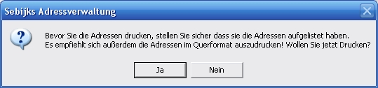
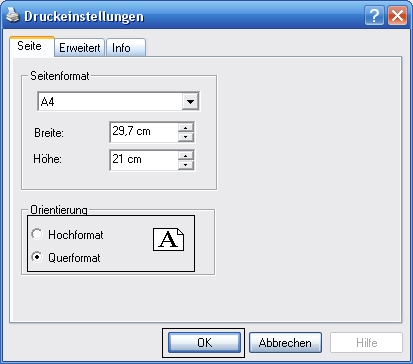

Sebijks Adressverwaltung: Adressen ausdrucken
Bevor Sie ihre Adressen ausdrucken, lesen bitte diese Seite:
Wenn Sie ihre Adressen ausdrucken wollen, müsst ihr die Adressen im Querformat ausdrucken, um Blätterverbrauch zu vermeiden.
So drucken Sie ihre Adressen aus:
Klicken Sie im Adressverwaltung auf "Auflisten" und dann auf .
Es erscheint dann diese Meldung:

Klicken Sie auf
"Ja", wählen dann ein Drucker aus und klicken
Sie auf Einstellungen.
Die Einstellungen
müssten so aussehen wie im Bild:

Klicken Sie wie auf dem Bild auf "OK" und dann auf "Drucken".